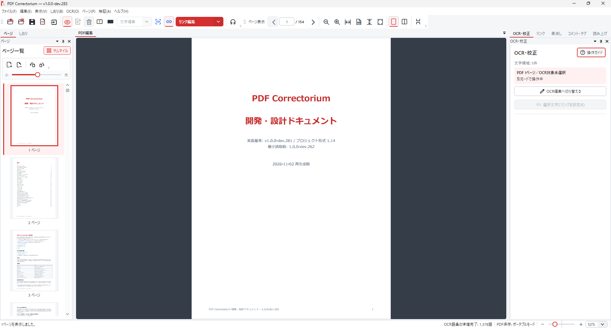
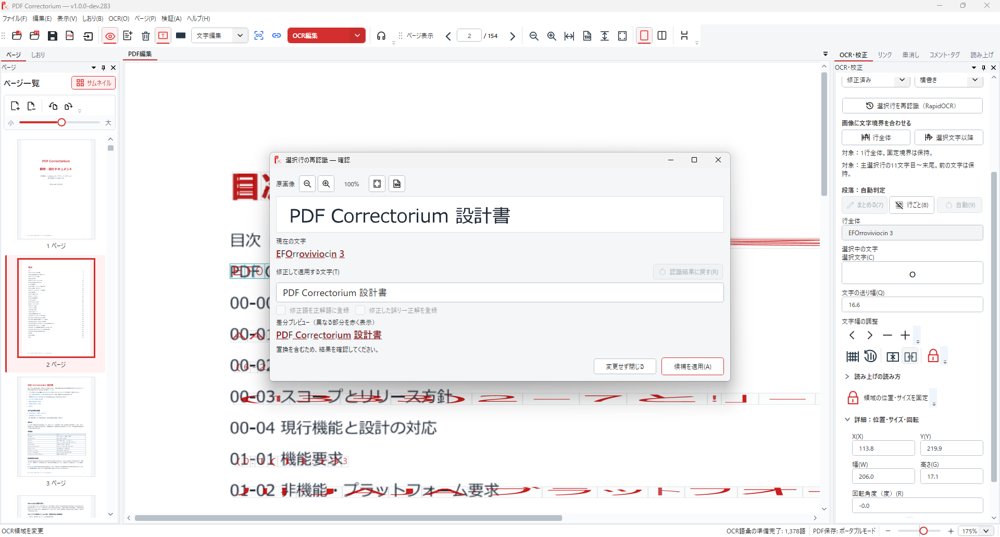
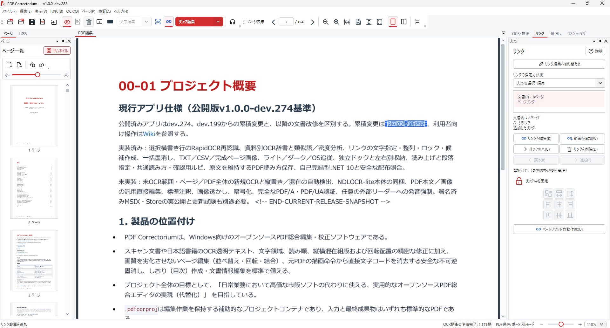
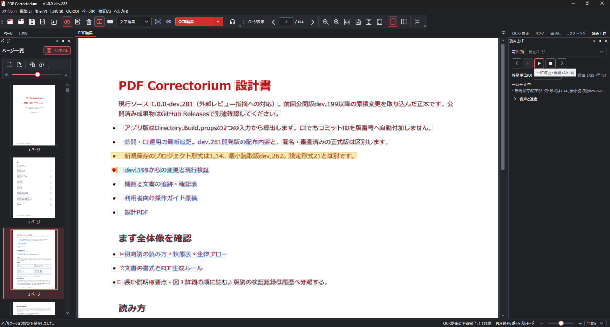

OCRの間違いを、原画像と照合。
透明テキストの文字・位置・文字間隔を調整。NDLOCR-Liteの結果の取り込みや、選択した横書き行のRapidOCR再認識で校正を助けます。
Windows向け・無料のオープンソース
原画像を見ながらOCRの誤りを直す。
ページを整え、リンクをつなぎ、声で確かめる。
文書の仕上げを、ひとつの作業画面で。
Windows 10（2004以降）/ 11 · x64 · ZIP版
開発版として配布中 · Microsoft Store版は準備中

01 — THE TOOLKIT
自動認識の、その先へ。
人の目で確かめる校正を、もっと扱いやすく。
透明テキストの文字・位置・文字間隔を調整。NDLOCR-Liteの結果の取り込みや、選択した横書き行のRapidOCR再認識で校正を助けます。
ページの並べ替え・回転・結合、しおり作成、文書内ページやWebへのリンク編集に対応します。
Windowsの音声で読み上げ。音声・速度・移動単位を選び、ライト／ダークテーマで作業できます。
02 — IN YOUR WORKFLOW
普段の文書を、より使いやすく。
実際の画面で、できることをご紹介します。
原画像、現在の文字、再認識した候補を並べて確認。差分を見ながら手動修正し、適用できます。

文字に設定したリンクを選び、リンク先を編集。リンク枠の整列やロックも利用できます。

読み上げ位置を紙面で確認し、前後へ移動。パネルをドッキングして作業を続けられます。

画像をクリックすると原寸表示できます。利用者提供の実機スクリーンショットを無加工で使用しています。紙面中の版番号は資料の作成時点のものです。公開リリースの内容はリリースページをご確認ください。
PDF・OCRなどの文書処理はPC内で行います。Webリンクを開く操作や更新確認などでは通信が発生します。
墨消し後は出力PDFを確認してください。プロジェクトファイルには原本や編集前データが残るため、墨消し済み文書の共有には出力PDFを使用してください。
一般のPDF本文をワープロのように直接書き換える機能や、ページ／PDF全体への新規OCRは、現在の紹介対象に含みません。
セキュリティ設計を読む ↗MAKE YOUR PDF WORK BETTER
ZIPを展開して起動。大切な原本は保管して、文書の校正を始めましょう。
公開リリースを見る ↗